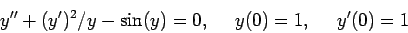
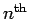
-order nonlinear differential equations that can be converted to a first order system. Try to make your class as broad as possible.
Following the steps laid out in class, we define
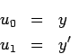
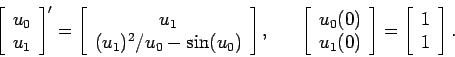
In generality, we see that it would be easy to perform this procedure
on any nonlinear system of the form
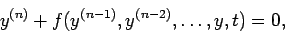
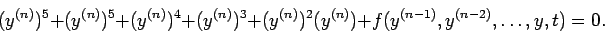
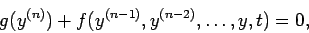
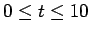
with step sizes of h=0.5,0.75,1,1.5,2,2.5. Plot the errors in the numerical computation as a function of time for the different step sizes all on the same graph. (Make sure your plot has a legend.) How does the computed solution compare to the exact solution for different values of h? Would a Taylor series method improve this computation at all?
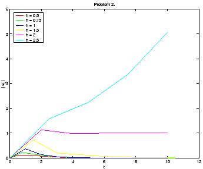
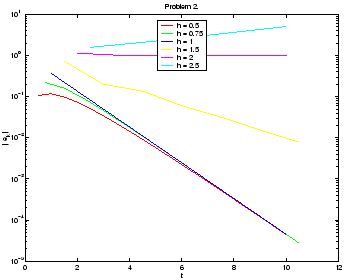
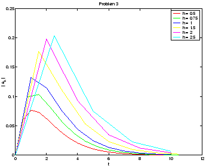
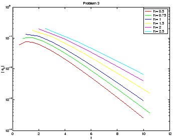
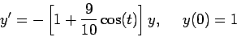
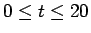
. If you cannot find an exact solution, compute a reference solution by setting h to be very, very small. Explain the difference in behavior for different values of h by examining the varying decay rate of the exact system as a function of time.
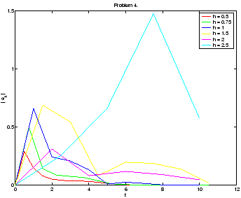
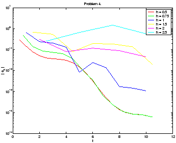
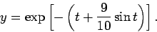
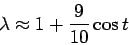
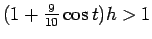
1$">, we can expect some unstable oscillations. Notice that, at some times, a larger step size works better. For example, we see that the h=2 works better than h=1.5 most of the time. This is the curse of instabilities.